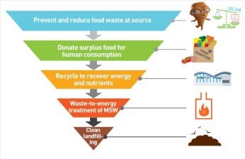

Solution for: The issue of waste
Answer Table
| 1. Norway | 6. packaging |
| 2. organic | 7. disposable goods |
| 3. disease | 8. C |
| 4. plastic | 9. E |
| 5. mass manufacturing | 10. D |
Exam Review


The issue of waste
Lecturer: Good afternoon, everybody. Today I'll be talking about the issue of waste, which has become an immense problem in today's society. We face huge challenges in terms of reducing its creation in the first place and then in dealing with it when it has been created. Now, the model of nature would be our ideal - a completely cyclical system in which no excess waste is generated that can't be processed by itself. However, we humans have proved, despite our apparent intelligence and ingenuity, quite incapable of achieving this. Where did it all go wrong? We have evidence that in ancient Greece and Rome governments operated municipal waste collection, and a huge Stone Age mound was identified some years ago in Norway as waste disposal, so we can see that people have been generating waste for a very long time indeed. However, during the Dark Ages, sophisticated municipal waste processing disappeared. The medieval answer to waste was to throw it out of the window. But this waste, apart from broken pottery and a few metal objects, was largely organic.
Question 1
- This question asks 'where': which three places are mentioned in the script? --> Greece, Rome, Norway
- Which words in the tapescript mean the same as 'rubbish dump'? --> 'mound' and 'waste disposal';
- Which words in the tapescript mean the same as 'was ... found'? --> 'was identified'
- What is the correct answer to Question 1? --> Norway
Question 2
- Can the words 'throw it out of the window' be an answer to Question 32? --> No. They could form the answer to another question: What type/method of waste disposal was most common?
- Which three types of waste in medieval times are mentioned in the tapescript? --> (broken) pottery, metal objects, organic waste
- What word is the tapescript means the same as 'most common'? --> largely
- What is the correct answer to Question 2? --> organic
This meant, of course, that it was quickly absorbed into the environment by the natural processes of decay. However, many concerned people, such as doctors, claimed that this created health problems, although it wasn't until science produced convincing evidence of the connection between rubbish and disease that governments began to see the importance of dealing with the problem effectively.
Unfortunately, their response has remained slower than the generation of waste. It is very hard to deal with waste that won't melt into the environment, as so many of our modern consumer goods won't, and that's why the invention of plastic has caused the worst headache for the environment - it's more than nature can deal with.
In order to address the root of the problem of waste, we need to think about what has made the quantity of waste accelerate in growth. I'd identify three main reasons. As many countries became industrialised, we saw the advent of mass manufacturing. This has been enormously damaging as it has greatly increased the amount of things on the planet's surface which don't go away by themselves.
Why are these answers not correct?
- industrialised --> 'Industrialised' is an adjective, not a noun. A 'factor' needs to be a noun, or a noun with an adjective.
- the advent of manufacturing --> 'The advent of manufacturing' is wrong for two reasons. Firstly, it consists of four words, and the question allows a maximum of two. Secondly, the problem of waste is specifically related to mass manufacturing, not just manufacturing
- damaging --> 'Damaging' is an adjective, not a noun. It does not make sense, as 'damaging' cannot lead to an increase in waste.
- amount of things --> 'Amount of things' is wrong for two reasons. Firstly, it consists of three words, and the question allows a maximum of two. Secondly, it has been taken from the tapescript without its context, so it doesn't really make sense. In the tapescript, the ‘amount of things' is carefully defined as 'on the planet's surface that don't go away by themselves'.
Closely related to this is packaging - necessary for transporting things around the world, but then extremely difficult to get rid of properly.
And a third aspect to the problem has been disposable goods. We have become accustomed to so many things being to use and then discard that we find it hard to imagine life without them. And yet we spare little thought for where they go when we do discard them.
Right now, let's move on from where all this waste comes from to what is done with it all now it's here. Different countries deal with waste differently. Of course, each country also changes what it does, so the figures for waste treatment I've got here are likely to change in the future. Let's look at Municipal Solid Waste, or MSW. MSW is important to consider because it's effectively a measurement of consumerism - how much waste people produce that goes beyond the absolute basic requirements in life to eat and drink.
One of the main ways of dealing with MSW is incineration -burning it. This is adopted variously around the world. The UK burns relatively little waste, as does the US, while Denmark burns about half of all waste, and Japan uses this method for as much as three quarters.
These are broad brush strokes, of course, because an important issue is how efficient and clean the burning process is. Another major form of waste treatment is using landfill sites - basically, burying the waste in the earth. Currently, this method is the dominant process used in the UK at over 80%. and is also heavily used in Germany and in the US, while densely populated and mountainous countries such as Switzerland and Japan dispose of relatively little this way.
A third - and much better way of dealing with waste is to recycle it, turning it back into more things we need. It must be said that much depends here on whether further waste is generated by the recycling processes themselves. The UK and Japan have rather poor records in recycling, while Switzerland tops the table in this respect, and reasonably impressive levels are achieved by Denmark and Germany. I really hope that if we all gathered here again ten years from now, these figures would be much higher. Time - and a lot of effort - will tell.
Questions 1-4
Answer the questions below.
Write NO MORE THAN ONE WORD AND/OR A NUMBER for each answer.
1 Where was a Stone Age rubbish dump found?
Answer: Norway Locate Listen from here
2 In Medieval times, what type of waste was most common?
Answer: organic Locate Listen from here
3 What did science link with waste?
Answer: disease Locate Listen from here
4 Which invention is the biggest problem for the environment?
Answer: plastic Locate Listen from here
----------------------
Tips: Short-answer questions
Task guide
► This task requires you to write answers to separate questions by using information you hear on the recording.
► The questions follow the order of the recording.
► Read the instructions carefully. Notice how many words you can use to answer each question. If you use more words than you are told, your answer will be wrong.
► You must write the exact words that you hear on the recording. Do not try to use other words or to change the form of words.
► Remember that the wording used in the questions is not likely to be exactly the same as the wording you hear on the recording. It is likely to be paraphrased or to use synonyms.
► Sometimes you may think you know the answer to a question from your general knowledge. But remember that these questions are about what the speaker says. You must answer the question according to what information the speaker gives on the recording.
Step-by-step Guide
► Step 1 - Think first
Look at Questions 1-4, and think about the kinds of answers you are required to write. Questions 1-4 are about facts. Questions 1, 3 and 4 will need to be answered with nouns. Question 2 will need to be answered with an adjective.
While multiple-choice questions often test your understanding of opinion rather than plain fact, in short-answer questions you need to listen for and extract facts.
► Step 2 - Identify the correct answer
This task is likely, particularly when used in Section 4, to involve dealing with more than one apparently possible answer. It's important to distinguish between what is apparently possible and what is correct.
Look at the tapescript for Questions 1 and 2 and answer the questions below.
Tapescript
We have evidence that in ancient Greece and Rome governments operated municipal waste collection, and a huge Stone Age mound was identified some years ago in Norway as waste disposal, so we can see that people have been generating waste for a very long time indeed. However, during the Dark Ages, sophisticated municipal waste processing disappeared.
The medieval answer to waste was to throw it out of the window. But this waste, apart from broken pottery and a few metal objects, was largely organic.
Question 1
- This question asks 'where': which three places are mentioned in the script?
- Which words in the tapescript mean the same as 'rubbish dump'?
- Which words in the tapescript mean the same as 'was ... found'?
- What is the correct answer to Question 1?
Question 2
- Can the words 'throw it out of the window' be an answer to Question 2?
- Which three types of waste in medieval times are mentioned in the tapescript?
- What word is the tapescript means the same as 'most common'?
- What is the correct answer to Question 2?
► Step 3 - Listen and do the task
Questions 5-7
List THREE factors which led to the increase in waste.
Write NO MORE THAN TWO WORDS for each answer.
5
Answer: mass manufacturing Locate Listen from here
6
Answer: packaging Locate Listen from here
7
Answer: disposable goods Locate Listen from here
-------------------
Short-answer questions
Task guide
► This task requires you to answer the same question with a list of two or more things.
► The instructions tell you the maximum number of words you can use. Do not use more words than this.
► You can write your answers in any order.
► It is important that what you write in the list answers the question.
Step-by-step guide
* Step 1 - Think first
The question asks you to list 'factors which led to the increase in waste'.
- Think of words which mean the same as 'factor'.
- Think of words which mean the same as 'lead to'.
- Think of words which mean the same as 'increase'.
- Think of words which mean the same as 'waste'.
► Step 2 - Select what to write
Look at the tapescript for Question 5. The correct answer is 'mass manufacturing'.
Tapescript
As many countries became industrialised, we saw the advent of mass manufacturing. This has been enormously damaging as it has greatly increased the amount of things on the planet's surface which don't go away by themselves.
Why are these answers not correct?
- industrialised
- the advent of manufacturing
- damaging
- amount of things
► Step 3 - Listen and do the task
Questions 8-0
Which country uses the highest proportion of each method of waste disposal?
Choose your answers from the box and write the letters A-F next to questions 8-10.
A Denmark
B Germany
C Japan
D Switzerland
E UK
F USA
8 incineration
Answer: C Locate Listen from here
9 landfill
Answer: E Locate Listen from here
10 recycling
Answer: D Locate Listen from here
--------
Tips: Matching
Task guide
► This task requires you choose an answer for each question from the same list of possible answers.
► The options are usually listed alphabetically or similarly. For example, if the options are dates, they will be listed with the earliest first.
► The questions follow the order of the recording.
► You must read the question very carefully, as the possible answers will be mentioned several times in different ways.
Step-by-step guide
► Step 1 - Read the question
The question asks you to listen for the country 'which uses the highest proportion of each method of waste disposal'.
It is very likely that all the six countries listed will use all three waste disposal methods.
It is possible that a large country such as the US could incinerate 'a low proportion' of its waste, but this waste could be 'a higher quantity' of waste than that incinerated by another smaller country that incinerates 'a high proportion' of its waste.
Such questions will not depend on mathematics.
You need to read the question very carefully.
► Step 2 - Check what you will hear
Look at the tapescript for Question 8.
Tapescript
One of the main ways of dealing with MSW is incineration -burning it. This is adopted variously around the world. The UK burns relatively little waste, as does the US, while Denmark burns about half of all waste, and Japan uses this method for as much as three quarters.
You hear four countries, the UK, the US, Denmark and Japan, mentioned very closely together. The possible answers, A, C, E and F, are all heard, and you must be able to distinguish C as the only correct one.
► Step 3 - Listen and do the task
Other Tests
-
Total questions: 10
- 5- Summary, form completion
- 5- Sentence Completion
-
Total questions: 0
- 10- Summary, form completion
-
-
Total questions: 10
- 10- Summary, form completion
-
-
Total questions: 10
- 10- Summary, form completion